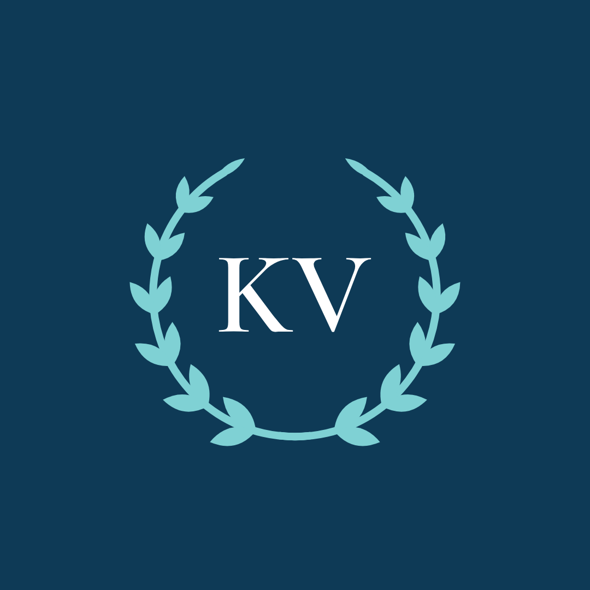
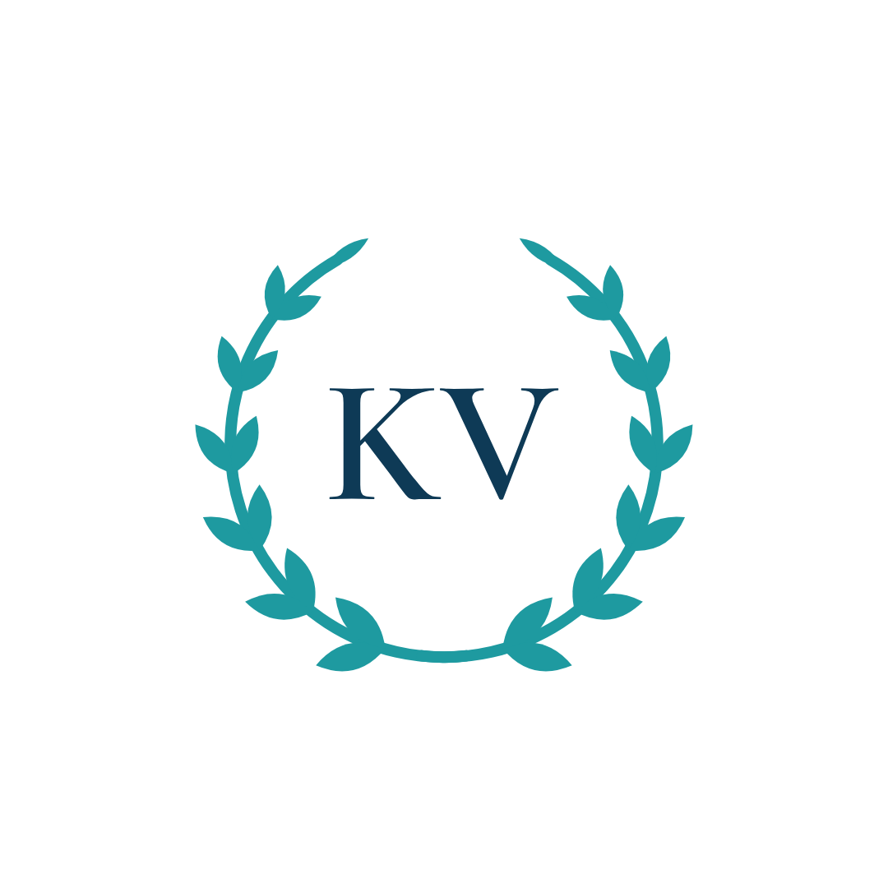
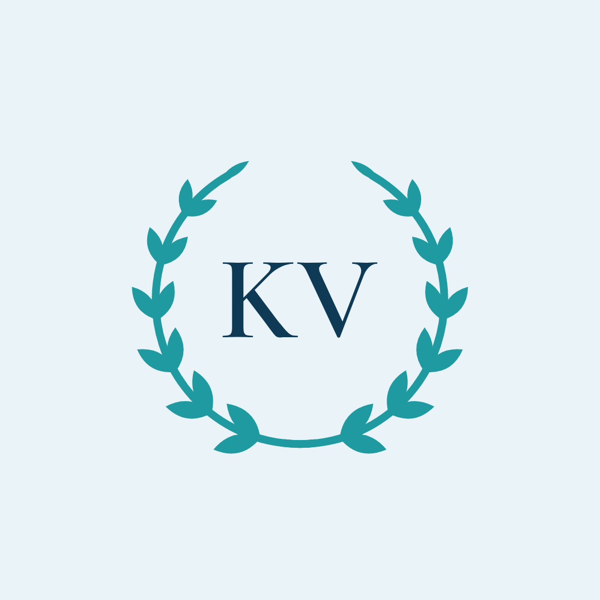
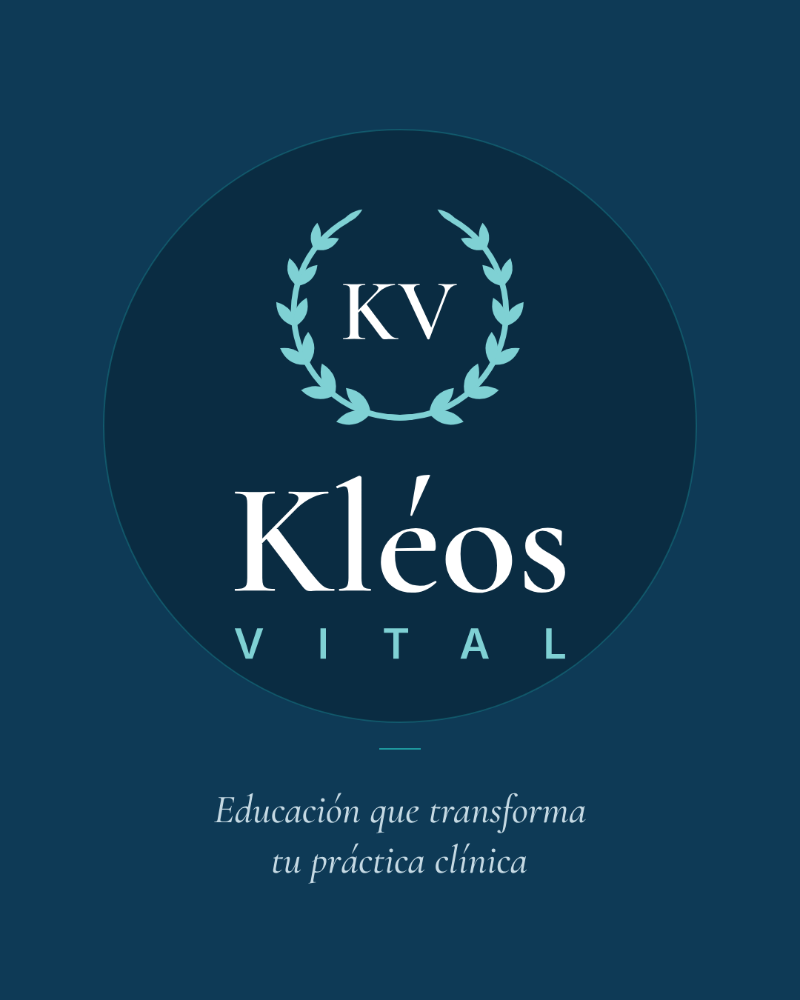
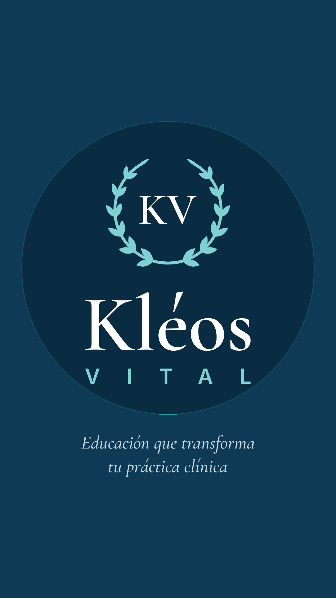
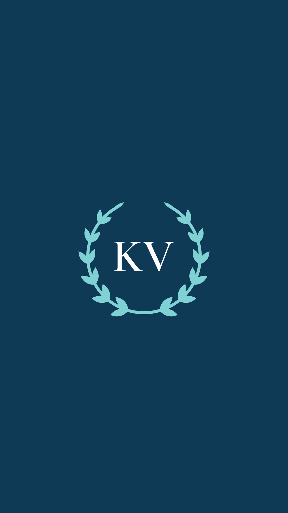
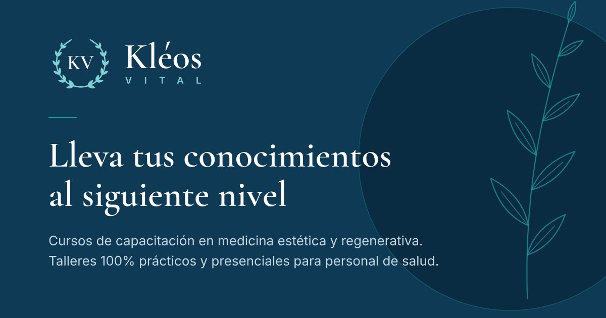

Logo
Tres formas, cuatro versiones de color
Los PNG tienen fondo transparente y buena resolución (2400 px el horizontal, 1600 px el vertical, 1024 px el símbolo). Los SVG se pueden ampliar sin perder calidad.
Horizontal
La versión principal. Barra del sitio, firmas, documentos y piezas anchas.


Vertical
Para piezas cuadradas o verticales: certificados, portadas, publicaciones.


Símbolo
El laurel con KV. Fotos de perfil, sellos y espacios pequeños.


Redes sociales
Piezas listas para subir
Cada imagen ya tiene la medida que pide la red. En las portadas, el contenido está centrado para que el celular no lo recorte.

Foto de perfil, fondo azul
1080 × 1080 px · 46 KB
Foto de perfil: Instagram, WhatsApp, Facebook, LinkedIn, TikTok


Foto de perfil, fondo blanco
1080 × 1080 px · 44 KB
Foto de perfil: Instagram, WhatsApp, Facebook, LinkedIn, TikTok


Foto de perfil, fondo celeste
1080 × 1080 px · 45 KB
Foto de perfil: Instagram, WhatsApp, Facebook, LinkedIn, TikTok


Publicación de Instagram
1080 × 1350 px · 93 KB
Publicación de presentación en el feed de Instagram (4:5)


Historia de Instagram
1080 × 1920 px · 109 KB
Historia de Instagram o estado de WhatsApp


Portada de destacadas
1080 × 1920 px · 44 KB
Portada de historias destacadas de Instagram

Portada de Facebook
1640 × 624 px · 62 KB
Foto de portada de Facebook (contenido centrado para que no se recorte en celular)

Portada de LinkedIn
1584 × 396 px · 42 KB
Portada de LinkedIn (deja libre la esquina de la foto de perfil)


Vista previa del enlace
1200 × 630 px · 67 KB
Vista previa al compartir el enlace de la página (WhatsApp, Facebook, LinkedIn)

Logo para firma de correo
600 × 248 px · 27 KB
Firma de correo y documentos (fondo transparente)

Web
Íconos para la página
Versión simplificada del símbolo, con hojas más grandes, para que se lea en la pestaña del navegador.
Favicon (SVG)
Ícono de la pestaña del navegador. Ya está en la página.

Favicon (ICO)
Respaldo para navegadores antiguos: 16, 32 y 48 px.
Ícono para iPhone
180 × 180 px. Cuando alguien guarda la página en su pantalla de inicio.

Ícono de app
512 × 512 px. Directorios, Google Business, apps de terceros.

Guía de uso
Para que el logo siempre se vea bien
Colores
Azul marino#0E3A56
Turquesa#1E9AA0
Turquesa oscuro#147278
Turquesa claro#7FD1D4
Celeste#EAF4F8
Blanco#FFFFFF
Tipografías
Cormorant Garamond
Títulos y el nombre “Kléos”. Seminegrita (600) y cursiva (500).
INTER
Textos y la palabra “VITAL”. Regular (400) y seminegrita (600). Ambas son gratuitas en Google Fonts.
Sí
- Deja alrededor del logo un espacio libre igual a la altura de las letras KV.
- Sobre fondos oscuros, usa la versión “para fondos oscuros”.
- Por debajo de 120 px de ancho, usa el símbolo en vez del logo horizontal.
- Por debajo de 32 px, usa el favicon (versión simplificada).
No
- No estires ni deformes el logo: escálalo siempre proporcional.
- No cambies los colores fuera de las cuatro versiones.
- No le agregues sombras, contornos ni efectos.
- No lo pongas sobre fotos con mucho detalle sin un fondo que lo separe.